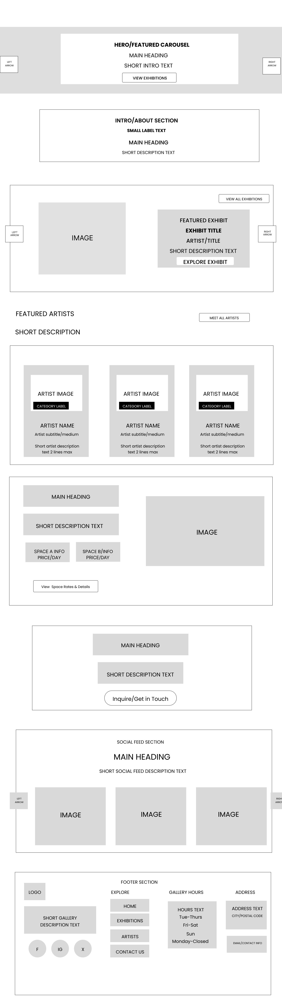

The Boxx Art Gallery
An immersive digital space designed to showcase contemporary art, built as part of the C3 Lab George Brown College co-op.
Launch Live Demo
Role
Interaction & Web Designer (Co-op)
Timeline
C3 Lab Internship (In Progress)
Platform
WordPress & HTML/CSS
Client
The Boxx Art Space
The Challenge & The Vision
Art galleries depend heavily on scale, lighting, and placement to invoke emotion. Digitizing this experience requires recreating those spatial dynamics inside a web browser without creating friction or cognitive load.
As a Digital Experience Design Intern at C3 Lab, I built the initial prototype and later transitioned the site into a fully content-managed WordPress environment. The goal was to build a clean, minimalist layout that shifts all user focus onto the artwork itself.
Design & Curation Process

Low-Fidelity Wireframing
Designing the foundational architecture of the online gallery. This structural blueprint established a clear hierarchy for the main hero carousel, introductory space, featured exhibitions, and artist profiles.
Focusing on a minimalist layout, the wireframe prioritizes white space and simple borders to draw emphasis directly to artist content, mitigating visual distraction.
HTML/CSS Coded Prototype
Before migrating to a CMS, I custom-coded a fully interactive prototype using HTML, CSS, and Vanilla Javascript to establish the visual rules, layout structure, and font choices.
This static demo allowed us to test transitions, verify page speed, and refine user interactions in a clean code environment prior to the final WordPress translation.
Explore Coded Demo
WordPress Theme Translation
The final phase translated the custom HTML/CSS prototype rules into a dynamic, content-managed WordPress environment. This allowed gallery managers to easily upload exhibitions while preserving the coded spacing systems.
By testing templates directly inside physical gallery rooms, we aligned the digital layouts with real-world display standards.
Physical Curation & Collaboration